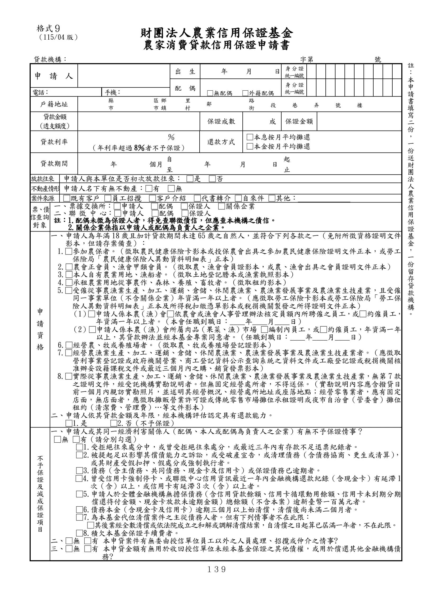

格式 9：農家消費貸款信用保證申請書
手冊頁：139 PDF頁：151／203

查看PDF文字層
下列文字取自PDF既有文字層，僅供搜尋、複製與無障礙輔助。複雜表格的欄列位置可能失真，正式內容請以原頁預覽或PDF為準。
財團法人農業信用保證基金
農家消費貸款信用保證申請書
貸款機構： 字第 號
申 請 人
出 生 年 月 日 身 分 證
統一編號
配 偶
□無配偶 □外籍配偶
身 分 證
統一編號
電話： 手機：
戶籍地址 縣
市
區鄉
市鎮
里
村 鄰 路
街 段 巷 弄 號 樓
貸款金額
（透支額度）
保證成數 成 保證金額
貸款利率
％
（年利率超過 8％者不予保證）
還款方式
□本息按月平均攤還
□本金按月平均攤還
貸款期間 年 個月 自 年 月 日 起
至 止
放款往來 申請人與本單位是否初次放款往來： □是 □否
不動產情形 申請人名下有無不動產：□有 □無
案件來源 □既有客戶 □員工招攬 □客戶介紹 □代書轉介 □自來件 □其他：
票、債
信查詢
對象
一、票據交換所：□申請人 □配偶 □保證人 □關係企業
二、聯 徵 中 心：□申請人 □配偶 □保證人
註：1.配偶未徵為保證人者，得免查聯徵債信，但應查本機構之債信。
2.關係企業係指以申請人或配偶為負責人之企業。
申
請
資
格
一、申請人為年滿18歲且加計貸款期間未達65歲之自然人，並符合下列各款之一（免附所徵資格證明文件
影本，但請存案備查）：
1.□參加農保者。（徵取農民健康保險卡影本或投保農會出具之參加農民健康保險證明文件正本，或勞工
保險局「農民健康保險人異動資料明細表」正本）
2.□農會正會員、漁會甲類會員。（徵取農、漁會會員證影本，或農、漁會出具之會員證明文件正本）
3.□本人自有農業用地、漁船者。（徵取土地登記謄本或漁業執照影本）
4.□承租農業用地從事農作、森林、養殖、畜牧者。（徵取租約影本）
5.□受僱從事農漁業生產、加工、運銷、倉儲、休閒農漁業、農漁業發展事業及農漁業生技產業，且受僱
同一事業單位（不含關係企業）年資滿一年以上者。（應徵取勞工保險卡影本或勞工保險局「勞工保
險人異動資料明細表」正本及所得稅扣繳憑單影本或稅捐機關製發之所得證明文件正本）
（1）□申請人係本農（漁）會□依農會或漁會人事管理辦法核定員額內所聘僱之員工，或□約僱員工，
年資滿一年以上者。（本會任職到職日：____年____月____日）
（2）□申請人係本農（漁）會所屬肉品（果菜、漁）市場 □編制內員工，或□約僱員工，年資滿一年
以上，其貸款辦法並經本基金專案同意者。（任職到職日：____年____月____日）
6.□經營農、牧或養殖場者。（徵取農、牧或養殖場登記證影本）
7.□經營農漁業生產、加工、運銷、倉儲、休閒農漁業、農漁業發展事業及農漁業生技產業者。（應徵取
營利事業登記證或政府機關營業、商工登記資料公示查詢系統之資料文件或工廠登記證或稅捐機關核
准辦妥設籍課稅文件或最近三個月內之購、銷貨發票影本）
8.□實際從事農漁業生產、加工、運銷、倉儲、休閒農漁業、農漁業發展事業及農漁業生技產業，無第7款
之證明文件，經受託機構實勘說明者。但無固定經營處所者，不得送保。（實勘說明內容應含撥貸日
前一個月內親訪實勘照片，並述明其經營概況、經營處所地址或座落地點；經營零售業者，應有固定
店面，無店面者，應徵取攤販營業許可證或傳統零售市場攤位承租證明或夜市自治會（管委會）攤位
租約（清潔費、管理費）…等文件影本）
二、申請人依其貸款金額及年限，經本機構評估認定具有還款能力。
□1.是 □2.否（不予保證）
不
予
保
證
及
減
成
保
證
項
目
一、申請人或其同一經濟利害關係人（配偶、本人或配偶為負責人之企業）有無不予保證情事？
□無 □有（請分別勾選）
□1.受拒絕往來處分中，或曾受拒絕往來處分，或最近三年內有存款不足退票紀錄者。
□2.被提起足以影響其償債能力之訴訟，或受破產宣告，或清理債務（含債務協商、更生或清算） ，
或其財產受假扣押、假處分或強制執行者。
□3.債務（含主債務、共同債務、現金卡及信用卡）或保證債務已逾期者。
□4.曾受信用卡強制停卡、或聯徵中心信用資訊最近一年內金融機構還款紀錄（含現金卡）有延滯1
次（含）以上，或信用卡有延滯3 次（含）以上者。
□5.申請人於全體金融機構無擔保債務（含信用貸款餘額、信用卡循環動用餘額、信用卡未到期分期
償還待付金額、現金卡放款未逾期金額）總餘額（不含本案）逾新臺幣一百萬元者。
□6.債務本金（含現金卡及信用卡）逾期三個月以上始清償，清償後尚未滿二個月者。
□7.為本基金代位清償案件之主從債務人者。但有下列情事者不在此限：
□其後業經全數清償或依法院成立之和解或調解清償結案，自清償之日起算已屆滿一年者，不在此限。
□8.積欠本基金保證手續費者。
二、□無 □有 本申貸案件有無委由授信單位員工以外之人員處理、招攬或仲介之情事?
三、□無 □有 本申貸金額有無用於收回授信單位未經本基金保證之其他債權，或用於償還其他金融機構債
務?
註
：
本
申
請
書
填
寫
二
份
，
一
份
送
財
團
法
人
農
業
信
用
保
證
基
金
，
一
份
留
存
貸
款
機
構
。
格式９
（115/04 版）